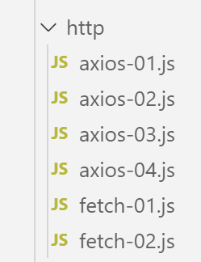

12. Die JavaScript-Funktionen von HTTP

12.1. Auswahl einer Bibliothek: HTTP
Wir haben uns hier für zwei Bibliotheken entschieden:
EcmaScript 6 verfügt nativ über eine Funktion namens HTTP, die von [fetch] aufgerufen wird und von [node.js] nicht implementiert ist (September 2019). Es gibt eine Bibliothek namens [node-fetch], die die Nutzung der Funktion [fetch] unter Node ermöglicht. Diese Bibliothek verwendet bestimmte API, die spezifisch für [node.js] sind. Ein [node-fetch]-Code ist daher möglicherweise nicht zu 100 % in eine Nicht-[node]-Umgebung übertragbar, beispielsweise in einen Browser;
Darüber hinaus gibt es eine Bibliothek namens [axios], die für HTTP-Abfragen vorgesehen ist und sowohl mit [node.js] als auch mit Browsern kompatibel ist. Diese Bibliothek werden wir letztendlich verwenden.
Wir werden dasselbe Skript vorstellen, das mit diesen beiden Bibliotheken geschrieben wurde, um zu zeigen, dass die Vorgehensweise beim Programmieren mit ihnen ähnlich ist.
12.2. Einrichtung einer Arbeitsumgebung
12.2.1. Installation des Steuerberechnungsservers
Letztendlich werden wir eine Webanwendung mit folgender Architektur erstellen:

JS: JavaScript
Der JavaScript-Code läuft auf dem Client:
- eines Dienstes für statische Seiten oder Fragmente;
- eines Dienstes jSON;
Der JavaScript-Code ist somit ein jSON-Client und kann als solcher in Schichten organisiert werden [UI, métier, dao] (UI: Benutzeroberfläche), so wie es auch bei unseren in PHP geschriebenen Clients jSON der Fall war.
Als Server wird der Steuerberechnungsserver dienen, von dem wir bereits 13 Versionen geschrieben haben. Wir werden nun eine 14. Version schreiben. Wir beginnen also damit, unter NetBeans den Ordner der Version 13 in den Ordner der Version 14 zu kopieren:

- in [6]. Anschließend ändern wir die Datei [config.json] der Version 14 wie folgt:
{
"databaseFilename": "Config/database.json",
"rootDirectory": "C:/myprograms/laragon-lite/www/php7/scripts-web/impots/version-14",
"relativeDependencies": [
"/Entities/BaseEntity.php",
"/Entities/Simulation.php",
...
"vues": {
"vue-authentification.php": [700, 221, 400],
"vue-calcul-impot.php": [200, 300, 341, 350, 800],
"vue-liste-simulations.php": [500, 600]
},
"vue-erreurs": "vue-erreurs.php"
}
- In Zeile 3 ändern wir das Stammverzeichnis der Anwendung;
Um auf diesen Server zuzugreifen, müssen die Dienste [Laragon] gestartet werden.
Anschließend können wir mit [Postman] (siehe Artikel-Link) diese neue Version des Servers testen, die derzeit mit Version 13 identisch ist. Wir können die Abfragesammlung verwenden, die zum Testen der Version 12 des Steuerberechnungsservers genutzt wurde:

- in [1-4] die Abfrage [init-session-700] verwenden, um eine Sitzung jSON zu initialisieren;
- bei [4-5] muss [version-14] anstelle von [version-12] verwendet werden, um die Version 14 des Projekts zu testen;
- Bei der Ausführung sollte die Antwort jS0N [6] vom Server zurückgegeben werden;
Die Version 14 des Servers ist nun betriebsbereit. Wir werden sie noch leicht anpassen müssen. Erinnern wir uns an den Wert API dieses Servers:
Aktion | Rolle | Ausführungskontext |
init-session | Dient zur Festlegung des Typs (json, xml, html) der gewünschten Antworten | Anfrage GET main.php?action=init-session&type=x kann jederzeit gesendet werden |
authentifier-utilisateur | Erlaubt einem Benutzer die Anmeldung oder verweigert sie | Anfrage POST main.php?action=authentifier-utilisateur Die Anfrage muss zwei über POST übermittelte Parameter enthalten: [user, password] Kann nur gesendet werden, wenn der Sitzungstyp (json, xml, html) bekannt ist |
Steuerberechnung | Führt eine Simulation der Steuerberechnung durch | Anfrage POST main.php?action=calculer-impot Die Anfrage muss drei POST-Parameter enthalten: [marié, enfants, salaire] Kann nur gesendet werden, wenn der Sitzungstyp (json, xml, html) bekannt ist und der Benutzer authentifiziert ist |
lister-simulations | Fordert die Liste der seit Beginn der Sitzung durchgeführten Simulationen an | Anfrage GET main.php?action=lister-simulations Die Anfrage akzeptiert keine weiteren Parameter Kann nur ausgegeben werden, wenn der Sitzungstyp (json, xml, html) bekannt ist und der Benutzer authentifiziert ist |
Simulation löschen | Löscht eine Simulation aus der Liste der Simulationen | Abfrage GET main.php?action=lister-simulations&numéro=x Die Anfrage akzeptiert keine weiteren Parameter Kann nur gesendet werden, wenn der Sitzungstyp (json, xml, html) bekannt ist und der Benutzer authentifiziert ist |
fin-session | Beendet die Simulationssitzung. | Technisch gesehen wird die alte Websitzung gelöscht und eine neue Sitzung erstellt Kann nur gesendet werden, wenn der Sitzungstyp (json, xml, html) bekannt ist und der Benutzer authentifiziert ist |
12.2.2. Installation der HTTP-Bibliotheken des JavaScript-Clients
Zunächst werden wir mit der folgenden Architektur arbeiten:

- In [1] sendet ein Konsolenskript [node.js] eine Anfrage HTTP an den Server jSON für die Steuerberechnung;
- in [4] empfängt es diese Antwort und zeigt sie auf der Konsole an;
In Beispiel Nr. 1 verwenden wir die Bibliotheken [node-fetch] und [axios]; für die folgenden Beispiele behalten wir dann nur [axios] bei. Wir installieren nun diese beiden JavaScript-Bibliotheken über das Terminal von [VSCode]:

Wir werden außerdem die Bibliothek [qs] verwenden, die die Kodierung URL einer Zeichenkette ermöglicht. Zur Erinnerung: Diese Kodierung wird verwendet, um die Parameter einer Anfrage HTTP, GET oder POST zu kodieren.

12.3. Skript [fetch-01]
Das Skript [fetch-01] nutzt die Bibliothek [node-fetch], um eine Sitzung jSON mit dem Steuerberechnungsserver zu initialisieren. Sein Code lautet wie folgt:
'use strict';
// Importe
import fetch from 'node-fetch';
import qs from 'qs';
import { sprintf } from 'sprintf-js';
import moment from 'moment';
// URL – Basis des Steuerberechnungsservers
const baseUrl = 'http://localhost/php7/scripts-web/impots/version-14/main.php?';
// Sitzung initialisieren
async function initSession() {
// Abfrageoptionen HHTP [get /main.php?action=init-session&type=json]
const options = {
method: "GET",
timeout: 2000
};
// Abfrageausführung HTTP [get /main.php?action=init-session&type=json]
let débutFetch;
try {
// asynchrone Anfrage – [fetch] gibt ein Versprechen ab
débutFetch = moment(Date.now());
const response = await fetch(baseUrl + qs.stringify({
action: 'init-session',
type: 'json'
}), options);
// [response] ist die gesamte Antwort HTTP des Servers (Header HTTP + die Antwort selbst)
// Diese Antwort wird angezeigt, um ihre Struktur zu sehen
console.log(sprintf("réponse fetch formatée en json,=%j, %s", response, heure(débutFetch)));
console.log("réponse fetch en javascript=", response);
// Die Header HTTP sind verfügbar
console.log("entêtes de la réponse=", response.headers);
// Wenn es sich um eine Antwort vom Typ „application/json“ handelt, wird die JSON-Antwort des Servers mit der asynchronen Funktion [response.json()] abgerufen
// In diesem Fall erhält der aufrufende Code ein Objekt [Promise]
// [await] ermöglicht es, die Antwort [json] vom Server zu erhalten, anstatt dessen Promise
const débutJson = moment(Date.now());
const objet = await response.json();
console.log(sprintf("réponse json=%j, type=%s, %s", objet, typeof (objet), heure(débutJson)));
return objet;
// Bei einer Antwort vom Typ „text/plain“ wird die Textantwort des Servers mit [response.text()] abgerufen
// In diesem Fall erhält der aufrufende Code ein Objekt [Promise]
// Mit [await] erhält man die Antwort [texte] vom Server anstelle des Promises
// const text = await response.text();
// console.log("Textantwort=", text);
// return text;
} catch (error) {
// Wir sind hier, weil der Server einen Fehlercode [404 Not Found, ...] zusammen mit einem leeren Textkörper gesendet hat – wir zeigen den Fehler an, um seine Struktur zu sehen
// oder weil der Client [fetch] eine Ausnahme ausgelöst hat (Netzwerk nicht erreichbar, ...)
// Die Struktur des Fehlers wird angezeigt
console.log(sprintf("error fetch en json=%j, %s", error, heure(débutFetch)));
console.log("error fetch en javascript=", typeof (error), error);
// die empfangene Fehlermeldung wird ausgegeben
throw error.message;
}
}
// Die Funktion „main“ führt die asynchrone Funktion [initSession] aus
async function main() {
try {
console.log("requête HTTP vers le serveur en cours ---------------------------------------------");
const response = await initSession();
console.log("succès ---------------------------------------------");
console.log("réponse=", response, typeof (response))
} catch (error) {
console.log("erreur ---------------------------------------------");
console.log("erreur=", error, typeof (error));
}
}
// Test
main();
// Dienstprogramm zur Anzeige von Uhrzeit und Dauer
function heure(début) {
// aktuelle Uhrzeit
const now = moment(Date.now());
// Zeitformatierung
let result = "heure=" + now.format("HH:mm:ss:SSS");
// Soll eine Dauer berechnet werden?
if (début) {
const durée = now - début;
const milliseconds = durée % 1000;
const seconds = Math.floor(durée / 1000);
// Formatierung von Uhrzeit und Dauer
result = result + sprintf(", durée= %s seconde(s) et %s millisecondes", seconds, milliseconds);
}
// Ergebnis
return result;
}
Anmerkungen
- Die JavaScript-Funktionen HTTP sind asynchrone Funktionen. Wir wenden hier das an, was wir im vorherigen Abschnitt gelernt haben (siehe Link);
- Zeile 24: Um darauf zu warten, dass die Antwort der asynchronen Funktion [fetch] in der Ereignisschleife von [node.js] veröffentlicht wird, verwenden wir das Schlüsselwort [await]. Wir wissen, dass diese Anweisung in einem Code stehen muss, dem das Schlüsselwort [async] vorangestellt ist (Zeile 13);
- Zeilen 13–56: Wir kapseln den Code HTTP in die asynchrone Funktion [initSession] ein;
- Zeilen 59–69: Eine zweite asynchrone Funktion [main] wird verwendet, um die asynchrone Funktion [initSession] blockierend (async/await) aufzurufen;
- Zeile 72: Die asynchrone Funktion [main] wird aufgerufen;
- obwohl der gesamte Code wie synchroner Code aussieht, werden hier tatsächlich asynchrone Funktionen ausgeführt, allerdings blockierend;
- Zeile 19: Um eine Sitzung jSON mit dem Steuerberechnungsserver zu initialisieren, muss der Befehl HTTP [get /main.php?action=init-session&type=json] an diesen gesendet werden. Genau das tut der Code in den Zeilen 24–27. Die Syntax von [fetch] lautet wie folgt: [fetch(URL, options)] mit:
- [URL]: die abgefragte URL;
- [options]: ein Objekt, das die Optionen der Abfrage definiert. Hier werden insbesondere die HTTP-Header definiert, die an den Zielrechner gesendet werden sollen;
- Zeilen 15–18: Hier werden die Optionen der gewünschten Anfrage definiert:
- [method]: Es soll ein GET durchgeführt werden;
- [timeout]: Der Client [fetch] soll nicht länger als 2 Sekunden auf die Antwort des Servers warten. Wird diese Frist überschritten, löst [fetch] eine Ausnahme aus;
- Zeile 24: Um die Werte URL und [/main.php?action=init-session&type=json] zu erhalten, verwendet man die Bibliothek [qs], um die Kodierung URL der Parameter [action,type] des GET zu erhalten. Die resultierende Zeichenkette lautet [init-session&type=json], die wir auch selbst hätten erstellen können. Wir wollten lediglich zeigen, wie man eine kodierte Zeichenkette URL erhält;
- Zeile 24: Das Schlüsselwort [await] zeigt, dass hier eine asynchrone Aufgabe gestartet wird und dass erwartet wird, dass sie ihre Antwort auf der Ereignisschleife von [node.js] veröffentlicht;
- Zeile 24: In [response] erhält man ein komplexes Objekt, das die gesamte empfangene Antwort HTTP beschreibt (Header und Dokument);
- Zeilen 30–31: Das Objekt [response] wird angezeigt, um seine Struktur zu betrachten, zunächst als Zeichenkette und anschließend als JavaScript-Objekt;
- Zeile 33: Die vom Server gesendeten Header HTTP werden angezeigt;
- Zeile 38: Es ist bekannt, dass der Steuerberechnungsserver eine Zeichenkette jSON senden wird. Diese ist im Objekt [response] gekapselt. Man kann sie mit der Methode [response.json()] abrufen. Diese Methode ist jedoch asynchron. Man schreibt daher [await response.json()], um die Zeichenkette jSON zu erhalten, die in der Ereignisschleife von [node.js] veröffentlicht wird. Tatsächlich erhält man nicht die Zeichenkette jSON, sondern das durch sie dargestellte JavaScript-Objekt;
- Zeile 39: Anzeige der empfangenen Zeichenfolge jSON;
- Zeile 40: Das empfangene JavaScript-Objekt wird zurückgegeben;
- Zeile 47: Ein möglicher Fehler der Anweisung [fetch] wird abgefangen. Diese löst nur dann eine Ausnahme aus, wenn die Operation HTTP nicht erfolgreich war und keine Antwort vom Server empfangen wurde. Wenn eine Antwort empfangen wurde – selbst wenn der Code HTTP sich von [200 OK] unterscheidet –, löst [fetch] keine Ausnahme aus, und die Antwort des Servers steht in Zeile 38 zur Verfügung;
- Zeilen 51–52: Das durch die Anweisung [catch] empfangene Objekt [error] wird angezeigt, zunächst als Zeichenkette jSON und anschließend als JavaScript-Objekt;
- Zeile 54: Die Fehlermeldung von [fetch] befindet sich in [error.message];
- Zeilen 59–69: Die asynchrone Funktion [main] ruft die asynchrone Funktion [initSession] blockierend auf (await in Zeile 62);
- Zeile 72: Die asynchrone Funktion [main] wird aufgerufen, woraufhin der Hauptcode des Skripts beendet wird. Das gesamte Skript ist beendet, sobald die gestarteten asynchronen Aufgaben ihre Ergebnisse in der Ereignisschleife veröffentlicht haben;
Die Ergebnisse der Ausführung lauten wie folgt:
Fall 1: Der Laragon-Server ist nicht gestartet
[Running] C:\myprograms\laragon-lite\bin\nodejs\node-v10\node.exe -r esm "c:\Data\st-2019\dev\es6\javascript\http\fetch-01.js"
requête HTTP vers le serveur en cours ---------------------------------------------
error fetch en json={"message":"network timeout at: http://localhost/php7/scripts-web/impots/version-14/main.php?action=init-session&type=json","type":"request-timeout"}, heure=10:08:48:180, durée= 2 seconde(s) et 62 millisecondes
error fetch en javascript= object { FetchError: network timeout at: http://localhost/php7/scripts-web/impots/version-14/main.php?action=init-session&type=json
at Timeout.<anonymous> (c:\Data\st-2019\dev\es6\javascript\node_modules\node-fetch\lib\index.js:1448:13)
at ontimeout (timers.js:436:11)
at tryOnTimeout (timers.js:300:5)
at listOnTimeout (timers.js:263:5)
at Timer.processTimers (timers.js:223:10)
message:
'Netzwerk-Timeout unter: http://localhost/php7/scripts-web/impots/version-14/main.php?action=init-session&type=json',
type: 'request-timeout' }
erreur ---------------------------------------------
erreur= network timeout at: http://localhost/php7/scripts-web/impots/version-14/main.php?action=init-session&type=json Zeichenfolge
[Done] exited with code=0 in 2.804 seconds
Anmerkungen
- Zeile 3: Die Anfrage HTTP schlägt nach 2 Sekunden und 62 Millisekunden fehl, da für die Anfrage HTTP ein Timeout von 2 Sekunden festgelegt wurde;
- Zeilen 4–9: Das JavaScript-Objekt [error], das von der Klausel [catch(error)] abgefangen wurde. Dieses Objekt hat zwei Eigenschaften:
- [FetchError]: Zeile 4;
- [message]: Zeilen 10–12;
- Zeile 14: Die von der asynchronen Funktion [main] empfangene Fehlermeldung;
Fall 2: Der Laragon-Server wird gestartet
[Running] C:\myprograms\laragon-lite\bin\nodejs\node-v10\node.exe -r esm "c:\Data\st-2019\dev\es6\javascript\http\fetch-01.js"
requête HTTP vers le serveur en cours ---------------------------------------------
réponse fetch formatée en json,={"size":0,"timeout":2000}, heure=10:13:50:814, durée= 0 seconde(s) et 375 millisecondes
réponse fetch en javascript= Response {
size: 0,
timeout: 2000,
[Symbol(Body internals)]:
{ body:
PassThrough {
_readableState: [ReadableState],
readable: true,
domain: null,
_events: [Object],
_eventsCount: 2,
_maxListeners: undefined,
_writableState: [WritableState],
writable: false,
allowHalfOpen: true,
_transformState: [Object] },
disturbed: false,
error: null },
[Symbol(Response internals)]:
{ url:
'http://localhost/php7/scripts-web/impots/version-14/main.php?action=init-session&type=json',
status: 200,
statusText: 'OK',
headers: Headers { [Symbol(map)]: [Object] },
counter: 0 } }
entêtes de la réponse= Headers {
[Symbol(map)]:
[Object: null prototype] {
date: [ 'Sat, 14 Sep 2019 08:13:50 GMT' ],
server: [ 'Apache/2.4.35 (Win64) OpenSSL/1.1.0i PHP/7.2.11' ],
'x-powered-by': [ 'PHP/7.2.11' ],
'cache-control': [ 'max-age=0, private, must-revalidate, no-cache, private' ],
'„set-cookie“: [ 'PHPSESSID=99q2iinusmhl55fa600aie2mmu; path=/' ],
'„content-length“: [ '86' ],
connection: [ 'close' ],
'content-type': [ 'application/json' ] } }
réponse json={"action":"init-session","état":700,"réponse":"session démarrée avec type [json]"}, type=object, heure=10:13:50:825, durée= 0 seconde(s) et 1 millisecondes
succès ---------------------------------------------
réponse= { action: 'init-session',
'Status: 700,
'Antwort: 'Sitzung mit Typ [json] gestartet' } Objekt
[Done] exited with code=0 in 1.022 seconds
Anmerkungen
- Zeile 3: [fetch] empfängt die Antwort des Servers nach 375 ms;
- Zeilen 4–39: Die Struktur des JavaScript-Objekts [response], das die Antwort des Servers kapselt. Unter seinen Eigenschaften könnten einige für uns von Interesse sein:
- [status] (Zeile 25): Code HTTP der Serverantwort;
- [statusText] (Zeile 26): diesem Code zugeordneter Text;
- [headers] (Zeile 27): die Header HTTP der Serverantwort;
- [body] (Zeile 8): stellt das vom Server gesendete Dokument dar. Der Befehl [fetch] bietet Methoden zu dessen Auswertung;
- Zeilen 29–39: die Header HTTP der Serverantwort;
- Zeile 40: Die asynchrone Funktion [response.json()] hat ihre Antwort nach 1 Millisekunde zurückgegeben;
- Zeilen 42–44: Das von der asynchronen Funktion [main] empfangene JavaScript-Objekt;
Fall 3: Der Laragon-Server ist gestartet, es wird ihm jedoch ein fehlerhafter Befehl gesendet:

- Oben, in Zeile 26, wird ein falscher Sitzungstyp an den Server übergeben;
Die Ergebnisse der Ausführung lauten wie folgt:
requête HTTP vers le serveur en cours ---------------------------------------------
réponse fetch formatée en json,={"size":0,"timeout":2000}, heure=10:27:54:114, durée= 0 seconde(s) et 136 millisecondes
réponse fetch en javascript= Response {
size: 0,
timeout: 2000,
[Symbol(Body internals)]:
{ body:
PassThrough {
_readableState: [ReadableState],
readable: true,
domain: null,
_events: [Object],
_eventsCount: 2,
_maxListeners: undefined,
_writableState: [WritableState],
writable: false,
allowHalfOpen: true,
_transformState: [Object] },
disturbed: false,
error: null },
[Symbol(Response internals)]:
{ url:
'„http://localhost/php7/scripts-web/impots/version-14/main.php?action=init-session&type=x“,
status: 400,
statusText: 'Bad Request',
headers: Headers { [Symbol(map)]: [Object] },
counter: 0 } }
entêtes de la réponse= Headers {
[Symbol(map)]:
[Object: null prototype] {
date: [ 'Sat, 14 Sep 2019 08:27:54 GMT' ],
server: [ 'Apache/2.4.35 (Win64) OpenSSL/1.1.0i PHP/7.2.11' ],
'x-powered-by': [ 'PHP/7.2.11' ],
'cache-control': [ 'max-age=0, private, must-revalidate, no-cache, private' ],
'„set-cookie“: [ 'PHPSESSID=5ku9gfok81ikj98hia0meeum57; path=/' ],
'„content-length“: [ '79' ],
connection: [ 'close' ],
'content-type': [ 'application/json' ] } }
réponse json={"action":"init-session","état":703,"réponse":"paramètre type=[x] invalide"}, type=object, heure=10:27:54:127, durée= 0 seconde(s) et 2 millisecondes
succès ---------------------------------------------
réponse= { action: 'init-session',
'Status: 703,
'Antwort: 'Parameter type=[x] ungültig' } Objekt
[Done] exited with code=0 in 0.712 seconds
- Die Antwort des Servers wird in Zeile 2 empfangen;
- Zeile 24: Man sieht, dass der Code HTTP der Serverantwort 400 ist, also ein Fehlercode. Dennoch hat [fetch] keine Ausnahme ausgelöst. Solange [fetch] eine Antwort vom Server erhält, verarbeitet es diese und löst keine Ausnahme aus;
- Zeilen 41–43: die von der asynchronen Funktion [main] erhaltene Antwort;
12.4. Skript [fetch-02]
Das folgende Skript greift das Skript [fetch-01] auf und entfernt alle überflüssigen Details:
'use strict';
// Importe
import fetch from 'node-fetch';
import qs from 'qs';
// URL Basis des Steuerberechnungsservers
const baseUrl = 'http://localhost/php7/scripts-web/impots/version-14/main.php?';
// Sitzung initialisieren
async function initSession() {
// Abfrageoptionen HHTP [get /main.php?action=init-session&type=json]
const options = {
method: "GET",
timeout: 2000
};
// Abfrageausführung HTTP [get /main.php?action=init-session&type=json]
const response = await fetch(baseUrl + qs.stringify({
action: 'init-session',
type: 'json'
}), options);
// Ergebnis empfangen in jSON
return await response.json();
}
// Die Funktion „main“ führt die asynchrone Funktion [initSession] aus
async function main() {
try {
console.log("requête HTTP vers le serveur en cours ---------------------------------------------");
const response = await initSession();
console.log("succès ---------------------------------------------");
console.log("réponse=", response)
} catch (error) {
console.log("erreur ---------------------------------------------");
console.log("erreur=", error.message);
}
}
// Test
main();
Die Ergebnisse einer normalen Ausführung:
[Running] C:\myprograms\laragon-lite\bin\nodejs\node-v10\node.exe -r esm "c:\Data\st-2019\dev\es6\javascript\http\fetch-02.js"
requête HTTP vers le serveur en cours ---------------------------------------------
succès ---------------------------------------------
réponse= { action: 'init-session',
'Status: 700,
'Antwort: 'Sitzung mit Typ [json] gestartet' }
[Done] exited with code=0 in 0.56 seconds
Die Ergebnisse einer Ausführung mit Ausnahme (der Laragon-Server wird angehalten):
[Running] C:\myprograms\laragon-lite\bin\nodejs\node-v10\node.exe -r esm "c:\Data\st-2019\dev\es6\javascript\http\fetch-02.js"
requête HTTP vers le serveur en cours ---------------------------------------------
erreur ---------------------------------------------
erreur= network timeout at: http://localhost/php7/scripts-web/impots/version-14/main.php?action=init-session&type=json
[Done] exited with code=0 in 2.701 seconds
12.5. Skript [axios-01]
Wir greifen hier das Skript [fetch-01] wieder auf, das wir mit der Bibliothek [axios] umschreiben. Zur Erinnerung: Unser Interesse an dieser Bibliothek liegt darin, dass sie zwischen der Umgebung [node.js] und den gängigen Browsern portierbar ist. Dies ermöglicht:
- in Phase 1, unsere Skripte in einer [node.js]-Umgebung zu testen;
- in Phase 2, sie auf einen Browser zu portieren;
Das Skript [axios-01] übernimmt die Struktur des Skripts [fetch-01]:
'use strict';
import axios from 'axios';
// Standardkonfiguration von axios
axios.defaults.timeout = 2000;
axios.defaults.baseURL = 'http://localhost/php7/scripts-web/impots/version-14';
// Sitzung initialisieren
async function initSession(axios) {
// Anfrageoptionen HHTP [get /main.php?action=init-session&type=json]
const options = {
method: "GET",
// Parameter der Abfrage URL
params: {
action: 'init-session',
type: 'json'
}
};
// Ausführung der Abfrage HTTP [get /main.php?action=init-session&type=json]
try {
// asynchrone Anfrage
const response = await axios.request('main.php', options);
// Die Antwort umfasst die gesamte Antwort HTTP des Servers (HTTP-Header + die Antwort selbst)
// Diese Antwort wird angezeigt, um ihre Struktur zu sehen
console.log("réponse axios=", response);
// Die Antwort des Servers befindet sich in [response.data]
return response.data;
} catch (error) {
// Wir befinden uns hier, weil der Server einen Fehlercode gesendet hat: [404 Not Found, 500 Internal Server Error, ...]
// Der Parameter [error] ist eine Ausnahmeinstanz – er kann verschiedene Formen annehmen
// wird angezeigt, um seine Struktur zu sehen
console.log("axios error=", typeof (error), error);
if (error.response) {
// Der Server hat im Status HTTP einen Fehler gemeldet, aber auch eine Antwort gesendet
// diese findet sich also in [error.response.data]
// Es ist bekannt, dass der Server Antworten jSON mit der Struktur {Aktion, Status, Antwort} sendet
// und dass im Fehlerfall die Fehlermeldung in [réponse] enthalten ist
return error.response.data;
} else {
// wird der Fehler ausgelöst
throw error;
}
}
}
// Die Funktion „main“ führt die asynchrone Funktion [initSession] aus
async function main() {
try {
console.log("requête HTTP vers le serveur en cours ---------------------------------------------");
const response = await initSession(axios);
console.log("succès ---------------------------------------------");
console.log("réponse=", response, typeof (response))
} catch (error) {
console.log("erreur ---------------------------------------------");
console.log("erreur=", error.message);
}
}
// Test
main();
Kommentare
- Zeile 2: Die Bibliothek [axios] wird importiert;
- Zeilen 5–6: Standardkonfiguration der Abfragen HTTP. Die Optionen von [axios.defaults] gelten für alle Abfragen von HTTP, die vom Objekt [axios] gesendet werden, ohne dass sie bei jeder neuen Abfrage erneut angegeben werden müssen;
- Zeile 5: Timeout von 2 Sekunden für alle Abfragen;
- Zeile 6: Alle URL-Anfragen werden relativ zur Basis-URL-Anfrage ausgedrückt;
- Zeile 9: die asynchrone Funktion [initSession];
- Zeilen 11–18: die Optionen der Abfrage HTTP, die gesendet wird (zusätzlich zu den bereits in den Zeilen 5–6 definierten Standardoptionen);
- Zeilen 14–17: die Parameter der Abfrage URL [action=init-session&type=json]. Das Objekt [params] wird automatisch in eine kodierte Zeichenkette URL umgewandelt;
- Zeile 22: blockierender Aufruf der asynchronen Funktion [axios.request]. Der erste Parameter ist das Zielobjekt URL, das aus [main.php] und dem in Zeile 6 definierten Basisobjekt URL zusammengesetzt ist. Der zweite Parameter ist das Objekt [options] aus den Zeilen 11–18;
- Zeile 25: [response] ist ein JavaScript-Objekt, das die gesamte Antwort HTTP des Servers (Header HTTP + Antwortdokument) kapselt. Es wird angezeigt, um seine JavaScript-Struktur zu betrachten;
- Zeile 27: Wenn der Server ein Dokument gesendet hat, dann befindet es sich in [response.data]. Hier wissen wir, dass der Server eine Antwort jSON zusammen mit dem Header HTTP [Content-type : application/json] sendet. Das Vorhandensein dieses Headers bewirkt, dass [axios] [response.data] automatisch in ein JavaScript-Objekt deserialisiert;
- Zeile 28: Die Funktion [axios] kann eine Ausnahme auslösen. Hier unterscheidet sich [axios] von [fetch]. In den folgenden Fällen wird eine Ausnahme ausgelöst:
- Die Anfrage HTTP konnte nicht gesendet werden (Fehler auf der Client-Seite);
- Der Server hat den Fehlercode HTTP (400, 404, 500, …) zurückgegeben (dieser Punkt ist tatsächlich konfigurierbar). Zur Erinnerung: Während der Fehlercode HTTP mit einer Antwort einhergeht, löste [fetch] keine Ausnahme aus, während [axios] eine Ausnahme auslöst. Wird der Fehlercode HTTP jedoch von einem Dokument begleitet, wird dieses in [error.response] abgelegt;
- Zeile 32: Die JavaScript-Struktur des Objekts [error] wird angezeigt;
- Zeilen 33–38: Wenn das Objekt [error] ein Objekt [response] enthält, wird diese Antwort an den aufrufenden Code zurückgegeben;
- Zeilen 39–42: In allen anderen Fällen wird das Objekt [error] an den aufrufenden Code zurückgegeben;
- Zeilen 47–57: die asynchrone Funktion [main];
- Zeile 50: blockierender Aufruf der asynchronen Funktion [initSession]. Die Antwort jSON wird vom Server als JavaScript-Objekt abgerufen;
- Zeilen 53–56: Abfangen eines möglichen Fehlers. Die Fehlermeldung befindet sich in [error.message];
Die Ergebnisse der Ausführung lauten wie folgt:
Fall 1: Der Laragon-Server ist nicht gestartet
[Running] C:\myprograms\laragon-lite\bin\nodejs\node-v10\node.exe -r esm "c:\Data\st-2019\dev\es6\javascript\http\axios-01.js"
requête HTTP vers le serveur en cours ---------------------------------------------
axios error= object { Error: timeout of 2000ms exceeded
at createError (c:\Data\st-2019\dev\es6\javascript\node_modules\axios\lib\core\createError.js:16:15)
at Timeout.handleRequestTimeout (c:\Data\st-2019\dev\es6\javascript\node_modules\axios\lib\adapters\http.js:252:16)
at ontimeout (timers.js:436:11)
at tryOnTimeout (timers.js:300:5)
at listOnTimeout (timers.js:263:5)
at Timer.processTimers (timers.js:223:10)
config:
{ url:
'http://localhost/php7/scripts-web/impots/version-14/main.php',
method: 'get',
params: { action: 'init-session', type: 'json' },
headers:
{ Accept: 'application/json, text/plain, */*',
'User-Agent': 'axios/0.19.0' },
baseURL: 'http://localhost/php7/scripts-web/impots/version-14',
transformRequest: [ [Function: transformRequest] ],
transformResponse: [ [Function: transformResponse] ],
timeout: 2000,
adapter: [Function: httpAdapter],
xsrfCookieName: 'XSRF-TOKEN',
xsrfHeaderName: 'X-XSRF-TOKEN',
maxContentLength: -1,
validateStatus: [Function: validateStatus],
data: undefined },
code: 'ECONNABORTED',
request:
Writable {
_writableState:
WritableState {
objectMode: false,
highWaterMark: 16384,
finalCalled: false,
needDrain: false,
ending: false,
ended: false,
finished: false,
destroyed: false,
decodeStrings: true,
defaultEncoding: 'utf8',
length: 0,
writing: false,
corked: 0,
sync: true,
bufferProcessing: false,
onwrite: [Function: bound onwrite],
writecb: null,
writelen: 0,
bufferedRequest: null,
lastBufferedRequest: null,
pendingcb: 0,
prefinished: false,
errorEmitted: false,
emitClose: true,
bufferedRequestCount: 0,
corkedRequestsFree: [Object] },
writable: true,
domain: null,
_events:
[Object: null prototype] {
response: [Function: handleResponse],
error: [Function: handleRequestError] },
_eventsCount: 2,
_maxListeners: undefined,
_options:
{ protocol: 'http:',
maxRedirects: 21,
maxBodyLength: 10485760,
path:
'/php7/scripts-web/impots/version-14/main.php?action=init-session&type=json',
method: 'GET',
headers: [Object],
agent: undefined,
auth: undefined,
hostname: 'localhost',
port: null,
nativeProtocols: [Object],
pathname: '/php7/scripts-web/impots/version-14/main.php',
search: '?action=init-session&type=json' },
_redirectCount: 0,
_redirects: [],
_requestBodyLength: 0,
_requestBodyBuffers: [],
_onNativeResponse: [Function],
_currentRequest:
ClientRequest {
domain: null,
_events: [Object],
_eventsCount: 6,
_maxListeners: undefined,
output: [],
outputEncodings: [],
outputCallbacks: [],
outputSize: 0,
writable: true,
_last: true,
chunkedEncoding: false,
shouldKeepAlive: false,
useChunkedEncodingByDefault: false,
sendDate: false,
_removedConnection: false,
_removedContLen: false,
_removedTE: false,
_contentLength: 0,
_hasBody: true,
_trailer: '',
finished: true,
_headerSent: true,
socket: [Socket],
connection: [Socket],
_header:
'GET /php7/scripts-web/impots/version-14/main.php?action=init-session&type=json HTTP/1.1\r\nAccept: application/json, text/plain, */*\r\nUser-Agent: axios/0.19.0\r\nHost: localhost\r\nConnection: close\r\n\r\n',
_onPendingData: [Function: noopPendingOutput],
agent: [Agent],
socketPath: undefined,
timeout: undefined,
method: 'GET',
path:
'/php7/scripts-web/impots/version-14/main.php?action=init-session&type=json',
_ended: false,
res: null,
aborted: 1568528450762,
timeoutCb: null,
upgradeOrConnect: false,
parser: [HTTPParser],
maxHeadersCount: null,
_redirectable: [Circular],
[Symbol(isCorked)]: false,
[Symbol(outHeadersKey)]: [Object] },
_currentUrl:
'http://localhost/php7/scripts-web/impots/version-14/main.php?action=init-session&type=json' },
response: undefined,
isAxiosError: true,
toJSON: [Function] }
erreur ---------------------------------------------
erreur= timeout of 2000ms exceeded
[Done] exited with code=0 in 2.784 seconds
Kommentare
- Zeilen 33–136: Das Objekt [error] enthält zahlreiche Informationen;
- [Error], Zeilen 3–9: eine Beschreibung des aufgetretenen Fehlers;
- [config], Zeilen 10–27: die Konfiguration der Abfrage HTTP, die zu diesem Fehler geführt hat;
- [config.url], Zeilen 11–12: das Ziel URL;
- [config.method], Zeile 13: Methode der Abfrage;
- [config.params], Zeile 14: die Parameter von URL;
- [config.headers], Zeilen 16–17: die Kopfzeilen HTTP der Abfrage;
- [config.baseURL], Zeile 18: das Basis-URL des Ziel-URL;
- [config.timeout], Zeile 21: das Timeout der Anfrage;
- [code], Zeile 28: ein Fehlercode;
- [request], Zeilen 29–133: eine detaillierte Beschreibung der Anfrage HTTP. Es ist zu beachten, dass den meisten Eigenschaften ein Unterstrich _ vorangestellt ist, was darauf hinweist, dass es sich um interne Eigenschaften des Objekts [request] handelt, die nicht für die direkte Nutzung durch den Entwickler bestimmt sind;
- [response], Zeile 134: die Antwort des Servers, die hier nicht vorhanden ist;
- Zeile 138: die von der Funktion [main] angezeigte Fehlermeldung;
Fall 2: Der Laragon-Server wird gestartet
[Running] C:\myprograms\laragon-lite\bin\nodejs\node-v10\node.exe -r esm "c:\Data\st-2019\dev\es6\javascript\http\axios-01.js"
requête HTTP vers le serveur en cours ---------------------------------------------
réponse axios= { status: 200,
statusText: 'OK',
headers:
{ date: 'Sun, 15 Sep 2019 07:09:26 GMT',
server: 'Apache/2.4.35 (Win64) OpenSSL/1.1.0i PHP/7.2.11',
'x-powered-by': 'PHP/7.2.11',
'cache-control': 'max-age=0, private, must-revalidate, no-cache, private',
'set-cookie': [ 'PHPSESSID=uas6lugtblstktcifpd8e5irm6; path=/' ],
'content-length': '86',
connection: 'close',
'content-type': 'application/json' },
config:
{ url:
'„http://localhost/php7/scripts-web/impots/version-14/main.php“,
method: 'get',
params: { action: 'init-session', type: 'json' },
headers:
{ Accept: 'application/json, text/plain, */*',
'„User-Agent“: 'axios/0.19.0' },
baseURL: 'http://localhost/php7/scripts-web/impots/version-14',
transformRequest: [ [Function: transformRequest] ],
transformResponse: [ [Function: transformResponse] ],
timeout: 2000,
adapter: [Function: httpAdapter],
xsrfCookieName: 'XSRF-TOKEN',
xsrfHeaderName: 'X-XSRF-TOKEN',
maxContentLength: -1,
validateStatus: [Function: validateStatus],
data: undefined },
request:
ClientRequest {
domain: null,
_events:
[Object: null prototype] {
socket: [Function],
abort: [Function],
aborted: [Function],
error: [Function],
timeout: [Function],
prefinish: [Function: requestOnPrefinish] },
_eventsCount: 6,
_maxListeners: undefined,
output: [],
outputEncodings: [],
outputCallbacks: [],
outputSize: 0,
writable: true,
_last: true,
chunkedEncoding: false,
shouldKeepAlive: false,
useChunkedEncodingByDefault: false,
sendDate: false,
_removedConnection: false,
_removedContLen: false,
_removedTE: false,
_contentLength: 0,
_hasBody: true,
_trailer: '',
finished: true,
_headerSent: true,
socket:
Socket {
connecting: false,
_hadError: false,
_handle: [TCP],
_parent: null,
_host: 'localhost',
_readableState: [ReadableState],
readable: true,
domain: null,
_events: [Object],
_eventsCount: 7,
_maxListeners: undefined,
_writableState: [WritableState],
writable: false,
allowHalfOpen: false,
_sockname: null,
_pendingData: null,
_pendingEncoding: '',
server: null,
_server: null,
parser: null,
_httpMessage: [Circular],
[Symbol(asyncId)]: 6,
[Symbol(lastWriteQueueSize)]: 0,
[Symbol(timeout)]: null,
[Symbol(kBytesRead)]: 0,
[Symbol(kBytesWritten)]: 0 },
connection:
Socket {
connecting: false,
_hadError: false,
_handle: [TCP],
_parent: null,
_host: 'localhost',
_readableState: [ReadableState],
readable: true,
domain: null,
_events: [Object],
_eventsCount: 7,
_maxListeners: undefined,
_writableState: [WritableState],
writable: false,
allowHalfOpen: false,
_sockname: null,
_pendingData: null,
_pendingEncoding: '',
server: null,
_server: null,
parser: null,
_httpMessage: [Circular],
[Symbol(asyncId)]: 6,
[Symbol(lastWriteQueueSize)]: 0,
[Symbol(timeout)]: null,
[Symbol(kBytesRead)]: 0,
[Symbol(kBytesWritten)]: 0 },
_header:
'GET /php7/scripts-web/impots/version-14/main.php?action=init-session&type=json HTTP/1.1\r\nAccept: application/json, text/plain, */*\r\nUser-Agent: axios/0.19.0\r\nHost: localhost\r\nConnection: close\r\n\r\n',
_onPendingData: [Function: noopPendingOutput],
agent:
Agent {
domain: null,
_events: [Object],
_eventsCount: 1,
_maxListeners: undefined,
defaultPort: 80,
protocol: 'http:',
options: [Object],
requests: {},
sockets: [Object],
freeSockets: {},
keepAliveMsecs: 1000,
keepAlive: false,
maxSockets: Infinity,
maxFreeSockets: 256 },
socketPath: undefined,
timeout: undefined,
method: 'GET',
path:
'/php7/scripts-web/impots/version-14/main.php?action=init-session&type=json',
_ended: true,
res:
IncomingMessage {
_readableState: [ReadableState],
readable: false,
domain: null,
_events: [Object],
_eventsCount: 3,
_maxListeners: undefined,
socket: [Socket],
connection: [Socket],
httpVersionMajor: 1,
httpVersionMinor: 0,
httpVersion: '1.0',
complete: true,
headers: [Object],
rawHeaders: [Array],
trailers: {},
rawTrailers: [],
aborted: false,
upgrade: false,
url: '',
method: null,
statusCode: 200,
statusMessage: 'OK',
client: [Socket],
_consuming: false,
_dumped: false,
req: [Circular],
responseUrl:
'http://localhost/php7/scripts-web/impots/version-14/main.php?action=init-session&type=json',
redirects: [] },
aborted: undefined,
timeoutCb: null,
upgradeOrConnect: false,
parser: null,
maxHeadersCount: null,
_redirectable:
Writable {
_writableState: [WritableState],
writable: true,
domain: null,
_events: [Object],
_eventsCount: 2,
_maxListeners: undefined,
_options: [Object],
_redirectCount: 0,
_redirects: [],
_requestBodyLength: 0,
_requestBodyBuffers: [],
_onNativeResponse: [Function],
_currentRequest: [Circular],
_currentUrl:
'http://localhost/php7/scripts-web/impots/version-14/main.php?action=init-session&type=json' },
[Symbol(isCorked)]: false,
[Symbol(outHeadersKey)]:
[Object: null prototype] { accept: [Array], 'user-agent': [Array], host: [Array] } },
data:
{ action: 'init-session',
'Status': 700,
'Antwort: 'Sitzung mit Typ [json] gestartet' } }
succès ---------------------------------------------
réponse= { action: 'init-session',
'Status': 700,
'Antwort: 'Sitzung mit Typ [json] gestartet' } Objekt
[Done] exited with code=0 in 1.115 seconds
Kommentare
- Zeilen 3–203: das JavaScript-Objekt [response], das die Antwort HTTP des Servers kapselt;
- Zeile 3, [status]: der Code HTTP der Antwort;
- Zeile 4, [statusText]: der Text, der dem vorherigen Code HTTP zugeordnet ist;
- Zeilen 5–13, [headers]: die Header HTTP der Antwort:
- Zeile 10, [Set-Cookie]: das Sitzungs-Cookie;
- Zeile 13, [Content-Type]: der Typ des vom Server gesendeten Dokuments;
- Zeilen 14–31, [config]: die Konfiguration der gesendeten Anfrage HTTP;
- Zeilen 32–199, [request]: das JavaScript-Objekt, das die gesendete Anfrage HTTP detailliert beschreibt;
- Zeilen 200–203, [request.data]: das JavaScript-Objekt, das die Antwort jSON vom Server kapselt;
- Zeilen 205–207: die von der asynchronen Funktion [main] abgerufene Antwort;
Fall 3: Es wird eine fehlerhafte Anfrage [init-session] an den Laragon-Server gesendet;

Die Ergebnisse der Ausführung lauten wie folgt:
[Running] C:\myprograms\laragon-lite\bin\nodejs\node-v10\node.exe -r esm "c:\Data\st-2019\dev\es6\javascript\http\axios-01.js"
requête HTTP vers le serveur en cours ---------------------------------------------
axios error= object { Error: Request failed with status code 400
...
config:
{ url:
'„http://localhost/php7/scripts-web/impots/version-14/main.php“,
...
data: undefined },
request:
...
[Symbol(outHeadersKey)]:
[Object: null prototype] { accept: [Array], 'user-agent': [Array], host: [Array] } },
response:
{ status: 400,
statusText: 'Bad Request',
headers:
{ date: 'Sun, 15 Sep 2019 07:25:58 GMT',
server: 'Apache/2.4.35 (Win64) OpenSSL/1.1.0i PHP/7.2.11',
'x-powered-by': 'PHP/7.2.11',
'cache-control': 'max-age=0, private, must-revalidate, no-cache, private',
'„set-cookie“: [Array],
'content-length': '79',
connection: 'close',
'content-type': 'application/json' },
config:
{ url:
'„http://localhost/php7/scripts-web/impots/version-14/main.php“,
...
data: undefined },
request:
...
[Symbol(outHeadersKey)]: [Object] },
data:
{ action: 'init-session',
'„status“: 703,
'Antwort: 'Parameter type=[x] ungültig' } },
isAxiosError: true,
toJSON: [Function] }
succès ---------------------------------------------
réponse= { action: 'init-session',
'Status: 703,
'Antwort: 'Parameter type=[x] ungültig' } Objekt
[Done] exited with code=0 in 0.69 seconds
Da der Server mit dem Code HTTP 400 geantwortet hat (Zeile 15), hat [axios] eine Ausnahme ausgelöst (auch dieses Verhalten ist konfigurierbar). Obwohl [axios] eine Ausnahme ausgelöst hat, erhalten wir in [error.response] (Zeile 14) dennoch die Antwort HTTP vom Server und das Dokument jSON, das an [error.response.data] gesendet wurde (Zeile 34). Zeilen 41–43: Die Funktion [main] ruft die Antwort jSON vom Server korrekt ab.
12.6. Skript [axios-02]
Nachdem wir nun die Objekte detailliert beschrieben haben, die von der Bibliothek [axios] bei einer Anfrage an HTTP verarbeitet werden, können wir das Skript [axios-01] wie folgt umschreiben:
'use strict';
import axios from 'axios';
// Standardkonfiguration von axios
axios.defaults.timeout = 2000;
axios.defaults.baseURL = 'http://localhost/php7/scripts-web/impots/version-14';
// Sitzung initialisieren
async function initSession(axios) {
// Anfrageoptionen HHTP [get /main.php?action=init-session&type=json]
const options = {
method: "GET",
// Parameter der Abfrage URL
params: {
action: 'init-session',
type: 'json'
}
};
try {
// Ausführung der Abfrage HTTP [get /main.php?action=init-session&type=json]
const response = await axios.request('main.php', options);
// Die Antwort des Servers lautet: [response.data]
return response.data;
} catch (error) {
// Antwort des Servers
if (error.response) {
// Die Antwort jSON befindet sich in [error.response.data]
return error.response.data;
} else {
// Der Fehler wird erneut ausgelöst
throw error;
}
}
}
// Die Funktion „main“ führt die asynchrone Funktion [initSession] aus
async function main() {
try {
console.log("requête HTTP vers le serveur en cours ---------------------------------------------");
const response = await initSession(axios);
console.log("succès ---------------------------------------------");
console.log("réponse=", response, typeof (response))
} catch (error) {
console.log("erreur ---------------------------------------------");
console.log("erreur=", error.message);
}
}
// Test
main();
12.7. Skript [axios-03]
Das Skript [axios-03] folgt der Vorgehensweise des Skripts [axios-02]. Diesmal wird die Anfrage HTTP [authentifier-utilisateur] an den Server gesendet, was mithilfe eines POST erfolgt:
'„use strict“;
import axios from 'axios';
import qs from 'qs'
// Axios-Konfiguration
axios.defaults.timeout = 2000;
axios.defaults.baseURL = 'http://localhost/php7/scripts-web/impots/version-14';
// Sitzung initialisieren
async function initSession(axios) {
// Anfrageoptionen HHTP [get /main.php?action=init-session&type=json]
const options = {
method: "GET",
// Parameter der Abfrage URL
params: {
action: 'init-session',
type: 'json'
}
};
try {
// Ausführung der Abfrage HTTP [get /main.php?action=init-session&type=json]
const response = await axios.request('main.php', options);
// Die Antwort des Servers befindet sich in [response.data]
return response.data;
} catch (error) {
// Antwort des Servers
if (error.response) {
// Die Antwort jSON befindet sich in [error.response.data]
return error.response.data;
} else {
// Der Fehler wird erneut ausgelöst
throw error;
}
}
}
async function authentifierUtilisateur(axios, user, password) {
// Anfrageoptionen: HHTP [POST /main.php?action=authentifier-utilisateur]
const options = {
method: "POST",
headers: {
'„Content-Type“: „application/x-www-form-urlencoded“,
},
// Hauptteil des POST
data: qs.stringify({
user: user,
password: password
}),
// Parameter der URL
params: {
action: 'authentifier-utilisateur'
}
};
try {
// Ausführung der Anfrage HTTP [post /main.php?action=authentifier-utilisateur]
const response = await axios.request('main.php', options);
// Die Antwort des Servers lautet: [response.data]
return response.data;
} catch (error) {
// Antwort des Servers
if (error.response) {
// Die Antwort jSON befindet sich in [error.response.data]
return error.response.data;
} else {
// Der Fehler wird erneut ausgelöst
throw error;
}
}
}
// Die Funktion „main“ führt die asynchronen Funktionen nacheinander aus
async function main() {
try {
// init-session
console.log("action init-session en cours ---------------------------------------------");
const response1 = await initSession(axios);
console.log("succès ---------------------------------------------");
console.log("réponse=", response1);
// Benutzer authentifizieren
console.log("action authentifier-utilisateur en cours ---------------------------------------------");
const response2 = await authentifierUtilisateur(axios, 'admin', 'admin');
console.log("succès ---------------------------------------------");
console.log("réponse=", response2)
} catch (error) {
console.log("erreur ---------------------------------------------");
console.log("erreur=", error);
}
}
// Test
main();
Kommentare
- Zeilen 38–70: die asynchrone Funktion [authentifierUtilisateur];
- Zeile 39: Die Abfrage [POST /main.php?action=authentifier-utilisateur] muss ausgeführt werden;
- Zeilen 40–54: die Optionen der Abfrage HTTP;
- Zeile 41: Es handelt sich um eine POST;
- Zeilen 42–44: Die Parameter von POST werden als URL in ein Dokument kodiert, das der Kunde zusammen mit seiner Anfrage sendet;
- Zeilen 46–49: Die Eigenschaft [data] muss die kodierte Zeichenfolge von POST URL enthalten. Dazu wird hier die in Zeile 3 importierte Bibliothek [qs] verwendet;
- Zeilen 55–69: Für die Ausführung der Abfrage wird derselbe Code wie in der Methode [initSession] verwendet;
- Zeilen 73–89: Die Methode [asynchrone] ruft nacheinander und blockierend die Methoden [initSession, authentifierUtilisateur] in den Zeilen 77 und 82 auf;
- Zeile 82: Als Anmeldedaten wird das Paar (admin, admin) verwendet. Es ist bekannt, dass diese vom Server akzeptiert werden;
Die Ergebnisse der Ausführung lauten wie folgt:
[Running] C:\myprograms\laragon-lite\bin\nodejs\node-v10\node.exe -r esm "c:\Data\st-2019\dev\es6\javascript\http\axios-03.js"
action init-session en cours ---------------------------------------------
succès ---------------------------------------------
réponse= { action: 'init-session',
'Status: 700,
'Antwort: 'Sitzung mit Typ [json] gestartet' }
action authentifier-utilisateur en cours ---------------------------------------------
succès ---------------------------------------------
réponse= { action: 'authentifier-utilisateur',
'Status: 103,
'Antwort':
[ 'pas de session en cours. Commencer par action [init-session]' ] }
[Done] exited with code=0 in 0.834 seconds
- Zeilen 9–12: Die Benutzerauthentifizierung schlägt fehl: Der Server hat nicht gespeichert, dass eine Sitzung mit jSON initiiert wurde. Dies liegt daran, dass das als Antwort auf die erste Anfrage gesendete Sitzungs-Cookie nicht zurückgesendet wurde: [init-session];
12.8. Skript [axios-04]
Das Skript [axios-04] bringt zwei Verbesserungen gegenüber dem Skript [axios-03]:
- Es verwaltet das Session-Cookie;
- es fasst die gemeinsamen Elemente der Funktionen [initSession] und [authentifierUtilisateur] in einer Funktion [getRemoteData] zusammen;
'use strict';
import axios from 'axios';
import qs from 'qs'
// Axios-Konfiguration
axios.defaults.timeout = 2000;
axios.defaults.baseURL = 'http://localhost/php7/scripts-web/impots/version-14';
// Sitzungs-Cookie
const sessionCookieName = "PHPSESSID";
let sessionCookie = '';
// Sitzung initialisieren
async function initSession(axios) {
// Anfrageoptionen HHTP [get /main.php?action=init-session&type=json]
const options = {
method: "GET",
// Parameter der Abfrage URL
params: {
action: 'init-session',
type: 'json'
}
};
// Ausführung der Abfrage HTTP
return await getRemoteData(axios, options);
}
async function authentifierUtilisateur(axios, user, password) {
// Optionen der Abfrage HHTP [post /main.php?action=authentifier-utilisateur]
const options = {
method: "POST",
headers: {
'„Content-Type“: „application/x-www-form-urlencoded“,
},
// Hauptteil des POST
data: qs.stringify({
user: user,
password: password
}),
// Parameter der URL
params: {
action: 'authentifier-utilisateur'
}
};
// Ausführung der Anfrage HTTP
return await getRemoteData(axios, options);
}
async function getRemoteData(axios, options) {
// für das Sitzungs-Cookie
if (!options.headers) {
options.headers = {};
}
options.headers.Cookie = sessionCookie;
// Ausführung der Anfrage HTTP
let response;
try {
// asynchrone Anfrage
response = await axios.request('main.php', options);
} catch (error) {
// Der Parameter [error] ist eine Ausnahmeinstanz – er kann verschiedene Formen annehmen
if (error.response) {
// Die Antwort des Servers befindet sich in [error.response]
response = error.response;
} else {
// Der Fehler wird erneut ausgelöst
throw error;
}
}
// „response“ ist die gesamte Antwort HTTP des Servers (Header HTTP + die Antwort selbst)
// Das Sitzungs-Cookie wird abgerufen, sofern es vorhanden ist
const setCookie = response.headers['set-cookie'];
if (setCookie) {
// setCookie ist ein Array
// Das Sitzungs-Cookie wird in diesem Array gesucht
let trouvé = false;
let i = 0;
while (!trouvé && i < setCookie.length) {
// Das Session-Cookie wird gesucht
const results = RegExp('^(' + sessionCookieName + '.+?);').exec(setCookie[i]);
if (results) {
// Das Session-Cookie wird gespeichert
// eslint-disable-next-line require-atomic-updates
sessionCookie = results[1];
// Es wurde gefunden
trouvé = true;
} else {
// nächstes Element
i++;
}
}
}
// Die Antwort des Servers lautet: [response.data]
return response.data;
}
// Die Funktion „main“ führt die asynchronen Funktionen nacheinander aus
async function main() {
try {
// init-session
console.log("action init-session en cours ---------------------------------------------");
const response1 = await initSession(axios);
console.log("succès ---------------------------------------------");
console.log("réponse=", response1);
// Benutzer authentifizieren
console.log("action authentifier-utilisateur en cours ---------------------------------------------");
const response2 = await authentifierUtilisateur(axios, 'admin', 'admin');
console.log("succès ---------------------------------------------");
console.log("réponse=", response2)
} catch (error) {
console.log("erreur ---------------------------------------------");
console.log("erreur=", error.message);
}
}
// Test
main();
Kommentare
- Zeilen 14–26: die Funktion [initSession]. Sie beschränkt sich nun darauf, die an den Server zu sendende Abfrage HTTP vorzubereiten, führt diese jedoch nicht aus. Diese Aufgabe übernimmt die Methode [getRemoteDate] in den Zeilen 49–95;
- Zeilen 28–47: Die Funktion [authentifierUtilisateur] folgt dem gleichen Vorgehen;
- Zeile 49: Die Funktion [getRemoteData] erhält die beiden Informationen, die es ihr ermöglichen, eine Anfrage HTTP auszuführen:
- [axios], das Objekt, das für das Senden der Anfrage und den Empfang der Antwort zuständig ist;
- [options], die Konfigurationsoptionen für die an den Server zu sendende Anfrage;
- Zeile 59: Ausführung der Anfrage und blockierendes Warten auf die Antwort jSON;
- Zeilen 60–68: Behandlung einer möglichen Ausnahme;
- Zeile 64: Die Antwort wird abgerufen, die möglicherweise im Fehlerobjekt gekapselt ist;
- Zeile 67: Wenn der Server eine Ausnahme ausgelöst hat, ohne die Serverantwort einzubeziehen, wird der empfangene Fehler an den aufrufenden Code weitergeleitet;
- Die Funktion [getRemoteData] verwaltet das Sitzungs-Cookie:
- Er speichert ihn in der Variablen [sessionCookie] (Zeile 11), sobald er ihn zum ersten Mal empfängt;
- anschließend sendet er ihn bei jeder neuen Anfrage als HTTP zurück;
- Zeilen 72–92: [getRemoteData] analysiert jede Antwort des Servers, um festzustellen, ob dieser den Header HTTP [Set-Cookie] gesendet hat. Es ist bekannt, dass der Server ein Sitzungs-Cookie mit dem Namen [PHPSESSID] sendet (Zeile 10). Daher wird nach diesem Cookie gesucht (Zeile 10);
- Zeile 72: Die Header HTTP und [Set-Cookie] werden abgerufen, sofern sie vorhanden sind (die Groß-/Kleinschreibung spielt keine Rolle). Es kann tatsächlich mehrere Header vom Typ „[Set-Cookie]“ geben, daher wird ein Array abgerufen;
- Zeile 73: Wenn ein Array mit Cookies abgerufen wurde;
- Zeilen 78–90: Das Sitzungs-Cookie wird unter allen Cookies des Arrays gesucht;
- Zeile 80: Der relationale Ausdruck, mit dem das Sitzungs-Cookie im Cookie Nr. i gesucht wird;
- Zeile 81: Wenn der Vergleich Ergebnisse geliefert hat;
- Zeile 84: In `results[1]` befindet sich die erste Klammer des Musters des relationalen Ausdrucks, d. h. von `(PHPSESSID=xxxx)` bis zum `;` (nicht enthalten), das das Sitzungs-Cookie abschließt;
- Zeilen 50–54: Bei jeder Anfrage wird das Sitzungs-Cookie in die Header der Anfrage als „HTTP“ aufgenommen. Beim ersten Mal ist dieses Cookie leer und wird daher vom Server ignoriert;
Die Ergebnisse der Ausführung lauten wie folgt:
[Running] C:\myprograms\laragon-lite\bin\nodejs\node-v10\node.exe -r esm "c:\Data\st-2019\dev\es6\javascript\http\axios-04.js"
action init-session en cours ---------------------------------------------
succès ---------------------------------------------
réponse= { action: 'init-session',
'Status: 700,
'Antwort: 'Sitzung mit Typ [json] gestartet' }
action authentifier-utilisateur en cours ---------------------------------------------
succès ---------------------------------------------
réponse= { action: 'authentifier-utilisateur',
'Status: 200,
'Antwort: 'Authentifizierung erfolgreich [admin, admin]' }
[Done] exited with code=0 in 0.982 seconds